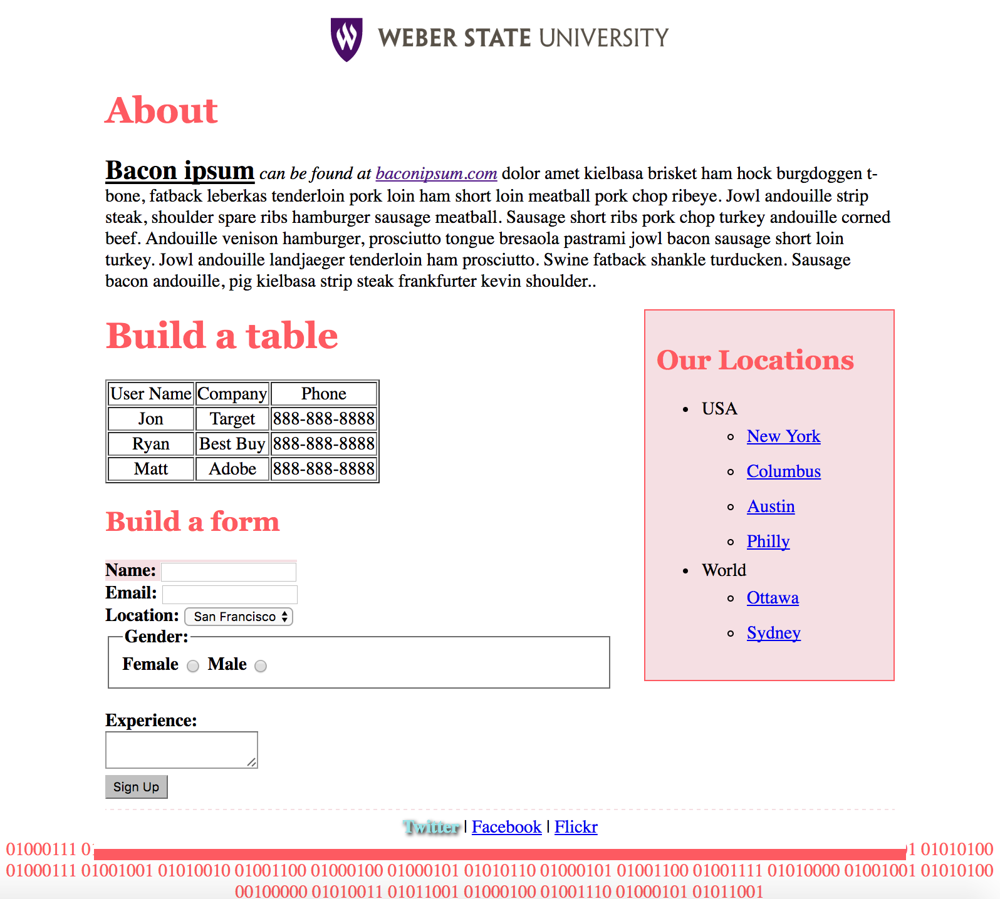

Starting with the solution from the HTML 2 exercise, add CSS rules to the webpage so that it looks like the screenshot below.
First figure out what selector you can use to select a part of the page, adding class or id attributes to the HTML if necessary.
Then create the CSS rule with that selector and the color property (e.g. color: red). Useful color names are red, blue, green, yellow, purple, orange, darkred, and lightblue.
Note that there are often multiple ways to achieve the same result in CSS. Try to use a mix of the different types of selectors- id, class, position in document, etc.
